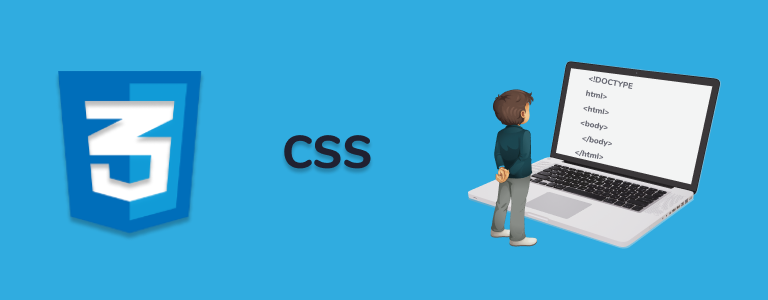

Main information
CSS (Cascading Style Sheets) არის პროგრამირების ენა, რომელიც პასუხისმგებელია ვებ-გვერდების სტილის შექმნაზე. იგი განსაზღვრავს, როგორ უნდა გამოიყურებოდეს HTML ელემენტები, როგორიცაა ტექსტი, სურათები, ბაკგრაუნდები და სხვა CSS-ს შეუძლია გარდაქმნას ვებ-გვერდის ვიზუალური სტრუქტურა და მომხმარებლებისთვის სასიამოვნო გამოცდილების შექმნა
CSS Selectors
სელექტორები ქმნიან კავშირებს HTML ელემენტებთან, რომელზეც უნდა განისაზღვროს სტილი. მაგალითად, თუ გვინდა გამოვიყენოთ სტილი h1 ელემენტზე, ავირჩევთ სელექტორს h1
How CSS Works
CSS-ის მუშაობა კარგად ჩანს კოდზე. როდესაც HTML ელემენტზე სტილის გამოყენებისათვის CSS არის დაწერილი, ის შთამბეჭდავად გარდაქმნის ტექსტს, ფორმატირებას, განლაგებას და სხვა ვიზუალურ ელემენტებს. CSS მუშაობს ისე, რომ HTML-ის კონტენტზე მოდიფიკაციების ჩასატარებლად ცვლილებები განხორციელდება მხოლოდ სტილში
